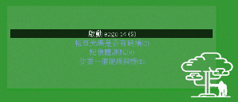

6.製作隨身碟
誠如單元 1 提及，ezgo 體驗方式有非常多種，而隨身碟體驗便是其中一個選擇，
當您下載 ezgo 之後，可以透過開機隨身碟製作軟體，將 ezgo 系統直接製作成
Live USB，再透過隨身碟開機，即可體驗 ezgo 系統。
● 隨身碟體驗 ezgo 的優缺點：
◎ 優點：
○ 無需安裝任何軟體、不影響原有電腦系統及資料。
○ 可播放多媒體聲音
○ 製作完成的作品及檔案，可儲存至硬碟或隨身碟。
◎ 缺點：
○ 需下載ISO檔，並製作成開機隨身碟
○ 需設定 BIOS 開機選項
○ 受限於隨身碟讀取速度，操作上會不流暢
● 製作 ezgo 隨身碟：
○ Windows 下的製作方式
■ 製作工具：UNetbootin
- 下載 UNetbootin
- 下載 ezgo ISO 檔
- 製作方法：
○ ezgo 下的製作方式
■ 製作方法：
-應用程式＼系統＼開機碟製作_usb-creator
| 步驟 1：選按『應用程式』中『系統』項下 的『ezgo開機碟製作_usb-creator』。 |
步驟 2：透過『其他』按鈕，選擇來源 ISO 檔所 存放的位置。 |
| 步驟 3：選按隨身碟，並設定預留可儲存資 料的空間。(以8G隨身碟為例，建 議留2G即可。) |
步驟 4：選按『製作開機碟』的按鈕，即可 開始製作 USB 開機隨身碟。 |
● 體驗方式：
○ 將ezgo隨身碟放入電腦光碟機
○ 重新啟動電腦
■ 如果開機後還是進入 Windows ，表示你的電腦設定的開機順序是優先進入硬碟裡的 Windows，
那麼這時候再次重新啟動時，請特別留意要先〔選擇〕或〔設定〕您的電腦開機順序。
〔選擇〕：一般的電腦在開機後立即按 F10 或 F12 即可看到開機磁碟選擇的畫面，這時候
選擇其中有 USB 的項目即可。
〔設定〕：一般的電腦在開機後立即按 F2 或 Delete 即可進入 BIOS 設定畫面，以設定
您的電腦優先以 USB 光碟開機，這個部份的作法略為複雜，建議您可以請有 BIOS
設定經驗的朋友協助您設定。
■ 以上作法若是都沒有成功，建議您可以請有 ezgo 或 Linux 使用經驗的朋友協助您
● 選擇 USB 開機示範：
| 步驟 1：電腦開機後，立即按鍵盤 F10 或 F12， 進入開機選單，選擇『USB HDD』, 按 『Enter』鍵進入開機程序。 |
步驟 2：進入開機畫面之後，在如下的畫面中 『啟用ezgo13』選項，按『Enter』鍵 進入系統。 |
|  | |
| 步驟 3：靜候 1-3 分鐘即可進入 ezgo 系統， 開始體驗相關的應用。 |
|
 |

{kind=link}
{kind=link}
{kind=link}
{kind=link}
{kind=link}
{kind=link}
{kind=link}
{kind=link}
{kind=link}
{kind=link}